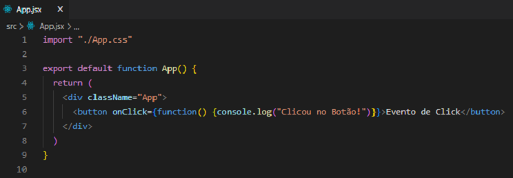

O exemplo mais básico de um evento de click é quando clicamos em um botão e algo é realizado. Temos diversos tipos de eventos, o onClick é apenas um deles. Então executaremos uma função quando o botão for clicado. Perceba a sintaxe de onClick, ela está inserida dentro da tag button e caso seja acionada a função handleClick será executada.
No navegador teremos:
Também temos a possibilidade de utilizar o evento diretamente no elemento:

No navegador teremos:
Nos exemplos acima utilizamos uma simples função para mostrar uma string no console. Porém muitas das vezes as funções inseridas nos eventos serão mais complexas.